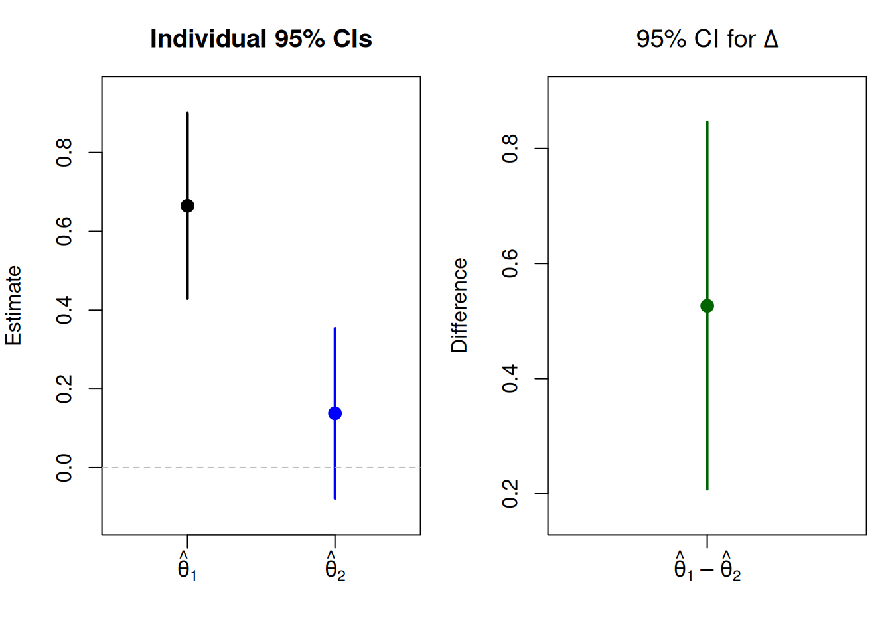
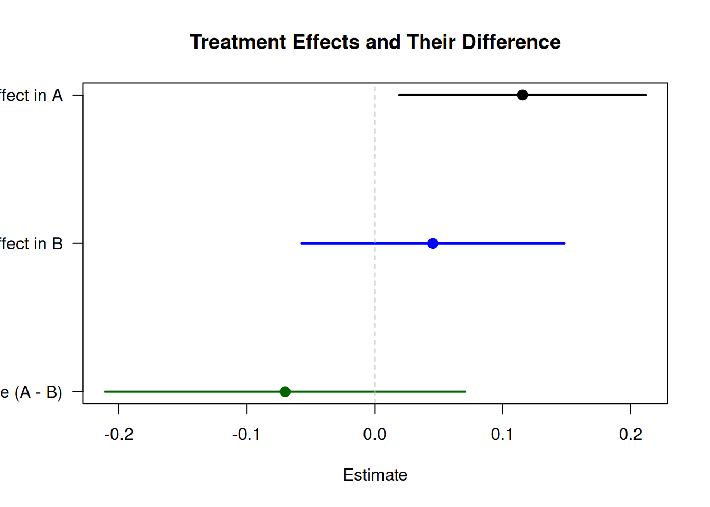
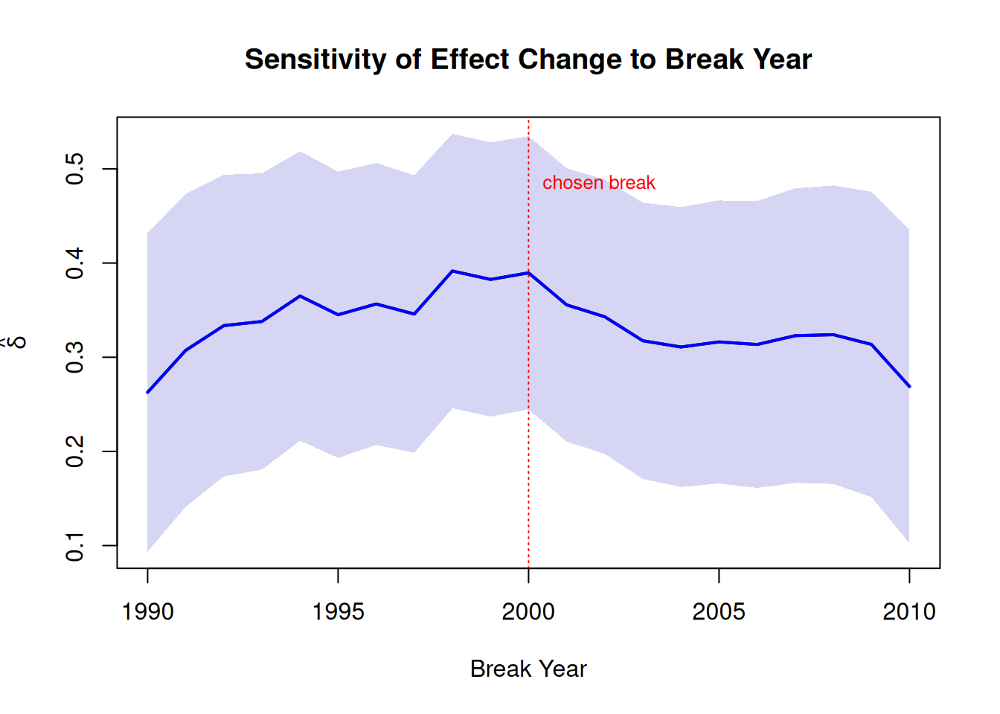

4Comparing Estimates Correctly: Why ‘Significant’ vs ‘Not Significant’ Is Not a Difference
From p-value thresholding to valid cross-group inference
Disclaimer: All data used in this chapter is simulated and does not reflect real-world data. The purpose of this chapter is to illustrate how to correctly compare estimates across groups, time periods, or contexts, not to make any claims about the real-world relationships used in the examples.
4.1 Why This Chapter Exists
Researchers routinely compare findings across subgroups, time periods, or model specifications. A pattern I have seen again and again goes like this:
Study A finds a statistically significant treatment effect (\(p < .05\)). Study B finds a non-significant effect (\(p = .12\)). Conclusion: “The effect differs between the two settings.”
That conclusion is wrong. Whether two estimates lie on different sides of an arbitrary threshold (like 0.05) is neither a necessary nor sufficient condition for concluding that they differ. In fact, two estimates that are significant at the 0.05 level can differ as can two estimates that are not significant at the 0.05 level. The key question is whether the difference between the two estimates is statistically distinguishable from zero, not whether each estimate individually crosses a threshold. In other words, the estimand of interest is:
Throughout this chapter, I teach one core idea: your question is about \(\Delta\), not about whether each estimate individually crosses 0.05.
To make this concrete, consider a simple, hypothetical setup. Two research teams in different countries run the same survey experiment with the question whether exposure to a corruption scandal vignette reduces trust in parliament. In both countries, respondents are randomly assigned to read either a short news vignette about confirmed high-level corruption (treatment) or a neutral governance news article (control). The dependent variable is trust in parliament on a 0–10 scale. Both experiments use the same true treatment effect, but one has a slightly larger sample. Their estimates and p-values can easily fall on different sides of 0.05, even though the underlying effect is identical.
set.seed(2020)# Two experiments with the SAME true effect:# corruption vignette lowers trust by 0.5 points on 0-10 scalen_A <-200n_B <-150# Country Atrust_A_ctrl <-rnorm(n_A /2, mean =5.5, sd =2)trust_A_treat <-rnorm(n_A /2, mean =5.0, sd =2)# Country B (same true effect, smaller sample)trust_B_ctrl <-rnorm(n_B /2, mean =5.5, sd =2)trust_B_treat <-rnorm(n_B /2, mean =5.0, sd =2)test_A <-t.test(trust_A_treat, trust_A_ctrl)test_B <-t.test(trust_B_treat, trust_B_ctrl)cat("Country A: effect on trust =", round(test_A$estimate[1] - test_A$estimate[2], 3),", p =", round(test_A$p.value, 4), "\n")
Country A: effect on trust = -0.949 , p = 0.0033
cat("Country B: effect on trust =", round(test_B$estimate[1] - test_B$estimate[2], 3),", p =", round(test_B$p.value, 4), "\n")
Country B: effect on trust = -0.28 , p = 0.4379
Even though both experiments draw from the same data-generating process with the same treatment effect (corruption vignette lowers trust by 0.5 points), the p-values can easily end up on different sides of 0.05. Concluding that the corruption vignette “reduces trust in Country A but not in Country B” would be a mistake of reasoning about thresholds rather than about the quantity of interest.
Wrong vs Right
Wrong: Compare \(p_1 < .05\) and \(p_2 > .05\) and conclude the effects differ.
Right: Test \(H_0: \theta_1 - \theta_2 = 0\) directly.
The rest of this chapter shows how to do it right, across two common scenarios: Independent samples and dependent samples with focus on time-period splits on the same units.
4.2 A Decision Tree for Comparing Two Estimates
Before diving into specific cases, I provide a decision tree that structures the key choices. When comparing two estimates, two questions determine the appropriate method:
1. Are the estimates independent?
If the two estimates come from entirely separate samples with no shared units, they are independent. If the same individuals, countries, or other units contribute to both estimates, the estimates are correlated and the comparison must account for the covariance.
For the direct comparison of two estimates, two formulas are essential. When the estimates are independent:
The independence condition is crucial. If the same individuals or a subset of the same individuals appear in both groups, using Equation 4.2 when Equation 4.3 is required will produce incorrect standard errors, typically too large, making the test conservative but misleading.
2. Is the model linear or nonlinear?
In linear models, differences in coefficients translate directly to differences in effects. In nonlinear models (logit, Poisson, etc.), coefficient differences do not map straightforwardly to differences in substantive quantities. In those cases, compare marginal effects or predicted probabilities instead.
4.3 Why CI Overlap and Threshold Crossing Are Unreliable
A related heuristic that researchers often use is: “The 95% confidence intervals overlap, so there is no significant difference.” This rule is not generally valid.
For two independent estimates with equal standard errors, non-overlapping 95% CIs actually correspond to a test at roughly the 0.6% level, not the 5% level. In other words, the “no overlap” rule is far too strict. It will miss many true differences. Conversely, a modest overlap does not mean the difference is zero.
The following simulation illustrates this. I generate two independent estimates whose true difference is nonzero and show that the 95% CIs can overlap even when the direct test of \(\Delta\) is significant.
# Fixed estimates chosen so that:# (1) both individual 95% CIs are above zero# (2) the two CIs overlap with each other# (3) the direct test of the difference is significanthat_1 <-0.50hat_2 <-0.22se_1 <-0.08se_2 <-0.08ci_1 <- hat_1 +c(-1, 1) *1.96* se_1ci_2 <- hat_2 +c(-1, 1) *1.96* se_2delta <- hat_1 - hat_2se_delta <-sqrt(se_1^2+ se_2^2)ci_delta <- delta +c(-1, 1) *1.96* se_deltaz_delta <- delta / se_deltap_delta <-2*pnorm(-abs(z_delta))cat("Estimate 1:", round(hat_1, 3), " 95% CI: [", round(ci_1[1], 3), ",", round(ci_1[2], 3), "]\n")
cat("z =", round(z_delta, 3), ", p =", round(p_delta, 4), "\n")
z = 2.475 , p = 0.0133
The figure below shows both perspectives side by side: the individual CIs (which overlap) and the direct CI for \(\Delta\) (which is the correct basis for inference).
par(mfrow =c(1, 2), mar =c(4, 4, 3, 1))# Left panel: individual CIsplot(1, hat_1, xlim =c(0.5, 2.5), ylim =range(c(ci_1, ci_2)) +c(-0.05, 0.05),xaxt ="n", xlab ="", ylab ="Estimate",main ="Individual 95% CIs", pch =19, cex =1.3)segments(1, ci_1[1], 1, ci_1[2], lwd =2)points(2, hat_2, pch =19, cex =1.3, col ="blue")segments(2, ci_2[1], 2, ci_2[2], lwd =2, col ="blue")axis(1, at =c(1, 2), labels =c(expression(hat(theta)[1]), expression(hat(theta)[2])))abline(h =0, lty =2, col ="gray")# Shade overlap regionoverlap_lo <-max(ci_1[1], ci_2[1])overlap_hi <-min(ci_1[2], ci_2[2])if (overlap_lo < overlap_hi) {rect(0.5, overlap_lo, 2.5, overlap_hi,col =rgb(1, 0.8, 0, 0.2), border =NA)text(1.5, (overlap_lo + overlap_hi) /2, "overlap", cex =0.8, col ="orange3")}# Right panel: difference CIplot(1, delta, xlim =c(0.5, 1.5), ylim =range(ci_delta) +c(-0.05, 0.05),xaxt ="n", xlab ="", ylab ="Difference",main =expression("95% CI for "* Delta), pch =19, cex =1.3, col ="darkgreen")segments(1, ci_delta[1], 1, ci_delta[2], lwd =2, col ="darkgreen")axis(1, at =1, labels =expression(hat(theta)[1] -hat(theta)[2]))abline(h =0, lty =2, col ="gray")par(mfrow =c(1, 1))

Figure 4.1: Left: Individual 95% CIs for each estimate. Right: Direct 95% CI for the difference. 95% CI overlap does not imply the difference is zero.
As we can see on the left plot, the individual CIs overlap. However, the result of the difference-in-means test on the right plot shows that the difference between both point estimates is statistically significant and the CI does not include the value of zero.
The key lesson is that CI overlap is a heuristic, not a replacement for a direct test. For independent estimates with equal variance, one can use approximately 83–84% CIs to achieve a visual test that corresponds to the 5% level, but I recommend always computing the direct test of \(\Delta\) instead of relying on visual rules. In the next section, I walk through how to do that correctly across two common scenarios.
4.4 Case I - Independent Samples: Two Separate Experiments
I now work through the first and simplest scenario: Comparing treatment effects from two entirely separate experiments or samples. I continue with the corruption and trust data from the beginning of this chapter, where two research teams in different countries each ran a randomized experiment to evaluate whether exposure to a corruption scandal vignette reduces trust in parliament. The samples are completely independent. Recall that both experiments draw from the same data-generating process with the same true effect (−0.5 points), but the p-values fell on different sides of 0.05. The correct analysis should confirm that there is no evidence that the effects differ.
First, I assemble the motivation data into data frames suitable for regression:
# Reshape the motivation data into data framesdata_A <-data.frame(trust =c(trust_A_ctrl, trust_A_treat),treat =rep(0:1, each = n_A /2),group ="A")data_B <-data.frame(trust =c(trust_B_ctrl, trust_B_treat),treat =rep(0:1, each = n_B /2),group ="B")data_pooled <-rbind(data_A, data_B)
4.4.1 The Tempting but Wrong Analysis
The tempting approach is to run separate regressions and compare the p-values:
model_A <-lm(trust ~ treat, data = data_A)model_B <-lm(trust ~ treat, data = data_B)cat("--- Country A ---\n")
Looking at these results separately, one might conclude that the corruption vignette “reduces trust” in one country but “has no effect” in the other, and therefore that the effects differ. But that reasoning is about thresholds, not about \(\Delta\).
4.4.2 Correct Approach A: Direct z-Test on \(\Delta\)
Since the samples are independent, I can apply Equation 4.2 directly:
cat("z =", round(z, 3), ", p =", round(p, 4), "\n")
z = -1.394 , p = 0.1633
The logic is straightforward: I take the two treatment-effect estimates, compute their difference \(\hat\Delta = \hat\beta_A - \hat\beta_B\), and divide by its standard error. Because the two samples are independent, the variance of the difference is just the sum of the two variances (Equation 4.2), and no covariance term is needed. The resulting z-statistic tells us whether the observed gap between the two estimates is larger than what we would expect from sampling variability alone. Here, the 95% CI for \(\Delta\) includes zero and the p-value does not reject the null hypothesis, confirming that the two experiments are consistent with the same underlying effect.
4.4.3 Correct Approach B: Pooled Model with Interaction Term
The more practical approach is to estimate a single pooled model with an interaction term:
where \(T_i\) is the treatment indicator (corruption vignette vs. control), \(G_i\) is a country indicator (0 = A, 1 = B), and \(\delta\) is the coefficient of interest. The interaction term directly estimates the difference in treatment effects between the two countries. The treatment effect in Country A is \(\beta\), and the treatment effect in Country B is \(\beta + \delta\).
model_pooled <-lm(trust ~ treat * group, data = data_pooled)summary(model_pooled)
Call:
lm(formula = trust ~ treat * group, data = data_pooled)
Residuals:
Min 1Q Median 3Q Max
-6.2953 -1.4771 0.0612 1.5295 6.1855
Coefficients:
Estimate Std. Error t value Pr(>|t|)
(Intercept) 5.7178 0.2231 25.633 < 2e-16 ***
treat -0.9491 0.3155 -3.009 0.00282 **
groupB -0.4715 0.3407 -1.384 0.16728
treat:groupB 0.6695 0.4819 1.389 0.16559
---
Signif. codes: 0 '***' 0.001 '**' 0.01 '*' 0.05 '.' 0.1 ' ' 1
Residual standard error: 2.231 on 346 degrees of freedom
Multiple R-squared: 0.02799, Adjusted R-squared: 0.01956
F-statistic: 3.321 on 3 and 346 DF, p-value: 0.02001
The coefficient on treat:groupB is \(\hat\delta\), which is the estimated difference in treatment effects between the two countries. As expected given that both experiments share the same true effect, the estimated difference is small and not statistically significant. This result confirms that the apparent discrepancy in p-values from the “wrong” analysis was misleading. Note also that this coefficient and its p-value correspond closely to the direct z-test above. This is not a coincidence: When both subgroup models use the same specification, the interaction approach and the direct comparison yield equivalent point estimates and typically equivalent tests under aligned linear-model assumptions. However, with heteroskedasticity-robust or clustered standard errors, the two approaches can diverge because the variance estimators operate on different model structures.
coefs_pooled <-coef(model_pooled)se_pooled <-summary(model_pooled)$coefficients[, "Std. Error"]effects <-c( coefs_pooled["treat"], coefs_pooled["treat"] + coefs_pooled["treat:groupB"], coefs_pooled["treat:groupB"])ses <-c( se_pooled["treat"],sqrt(se_pooled["treat"]^2+ se_pooled["treat:groupB"]^2+2*vcov(model_pooled)["treat", "treat:groupB"]), se_pooled["treat:groupB"])labels <-c("Effect in Country A", "Effect in Country B", "Difference (B - A)")cols <-c("black", "blue", "darkgreen")par(mar =c(4, 10, 3, 1))plot(effects, 3:1, xlim =range(c(effects -1.96* ses, effects +1.96* ses)),yaxt ="n", ylab ="", xlab ="Estimate (effect on trust)",main ="Corruption Vignette Effects and Their Difference",pch =19, col = cols, cex =1.3)segments(effects -1.96* ses, 3:1, effects +1.96* ses, 3:1, lwd =2, col = cols)axis(2, at =3:1, labels = labels, las =1)abline(v =0, lty =2, col ="gray")par(mar =c(5, 4, 4, 2) +0.1)

Figure 4.2: Coefficient plot showing the effect of the corruption vignette on trust in each country and their difference. The difference (delta) answers the correct question.
4.5 Case II - Non-Independent Estimates: Same Units Split over Time
The second scenario is more subtle and more commonly mishandled. Suppose I have a panel dataset of countries observed over several decades, and I want to know whether the effect of a policy variable \(X\) on an outcome \(Y\) changed between two time periods (e.g., 1970–1989 vs 1990–2020). In the simulation below, the true effect is the same in both periods (\(\beta = 0.3\)).
4.5.1 The Tempting but Wrong Analysis: Split and Compare
The tempting approach is to split the data by period and run separate regressions:
panel_early <- panel[panel$post ==0, ]panel_late <- panel[panel$post ==1, ]model_early <-lm(y ~ x +factor(country), data = panel_early)model_late <-lm(y ~ x +factor(country), data = panel_late)cat("--- 1970-1989 ---\n")
The results show a non-significant effect in the early period and a significant effect that also doubled in magnitude in the late period, tempting the researcher to conclude that the effect “emerged” after 1990. However, this conclusion is not supported by the data. Again, the correct question is whether the difference in effects between periods (\(\Delta\)) is statistically distinguishable from zero, not whether each period’s estimate individually crosses a significance threshold. Because the same countries appear in both periods, the estimates are correlated. Applying the independent-samples formula (Equation 4.2) would be incorrect. Instead, Equation 4.3 should be used.
4.5.2 The Correct Approach: Pooled Interaction Model
I estimate a single model on the full panel, including a period indicator and its interaction with \(X\):
Here \(\alpha_i\) are country fixed effects, \(\tau_t\) captures time trends, \(\beta\) is the effect of \(X\) in the early period, and \(\delta\) is the change in the effect between periods, which is the quantity of interest.
model_panel <-lm(y ~ x * post +factor(country) +factor(year), data = panel)coefs <-summary(model_panel)$coefficientscat("Interaction Term: ", round(coefs["x:post", "Estimate"], 4)," SE:", round(coefs["x:post", "Std. Error"], 4)," p:", round(coefs["x:post", "Pr(>|t|)"], 4), "\n")
Interaction Term: 0.0937 SE: 0.1371 p: 0.4945
The coefficient \(\hat\delta\) of the interaction term directly tests whether the effect of \(X\) changed between the two periods, properly accounting for the fact that the same countries appear in both periods. The country fixed effects absorb country-level confounders, and year fixed effects absorb common time trends. In contrast to the “wrong” approach, this model shows that there is no evidence of a change in the effect of \(X\) across periods, consistent with the data-generating process where the true effect is constant.
On Clustering Standard Errors
In panel settings, the error terms \(\varepsilon_{it}\) are typically correlated within countries over time. For robust inference, cluster standard errors at the panel-unit level (here: country). In designs where there is also cross-sectional dependence, two-way clustering (by country and by year) may be appropriate. I use the sandwich and lmtest packages when clustering is needed:
A practical caveat: with few clusters (a common rule of thumb is fewer than ~40–50), standard cluster-robust standard errors (CR1) can be severely size-distorted, leading to over-rejection. In such cases, consider bias-reduced linearization (CR2/CR3, available via the clubSandwich package) or the wild cluster bootstrap (e.g., via fwildclusterboot) for more reliable inference.
4.5.3 Robustness: Alternative Break Years
When the break year (here: 1990) is chosen by the researcher, it is good practice to show that results are not sensitive to this choice. For instance, I could re-estimate the model using alternative break years and plot how \(\hat\delta\) varies:
break_years <-1980:2000deltas <-numeric(length(break_years))ses <-numeric(length(break_years))for (i inseq_along(break_years)) { panel$post_alt <-as.integer(panel$year >= break_years[i]) m <-lm(y ~ x * post_alt +factor(country)+factor(year), data = panel) cs <-summary(m)$coefficientsif ("x:post_alt"%in%rownames(cs)) { deltas[i] <- cs["x:post_alt", "Estimate"] ses[i] <- cs["x:post_alt", "Std. Error"] }}plot(break_years, deltas, type ="l", lwd =2,ylim =range(c(deltas -1.96* ses, deltas +1.96* ses)),xlab ="Break Year", ylab =expression(hat(delta)),main ="Sensitivity of Effect Change to Break Year")polygon(c(break_years, rev(break_years)),c(deltas +1.96* ses, rev(deltas -1.96* ses)),col =rgb(0.2, 0.2, 0.8, 0.2), border =NA)lines(break_years, deltas, lwd =2, col ="blue")abline(h =0, lty =2, col ="gray")abline(v =1990, lty =3, col ="red")text(1990, max(deltas +1.96* ses) *0.9, "chosen break", col ="red", cex =0.8, pos =4)

Figure 4.3: Estimated change in the effect of X (delta) for different break years. The shaded region shows the 95% CI.
Structural Break Tests
For designs where the break date is part of the hypothesis (rather than imposed by the researcher), formal structural break tests exist. Use Chow-type tests for hypothesized known break dates; for unknown break dates, use supF, aveF, or expF statistics, or breakpoint estimation via breakpoints() in the strucchange package in R. These procedures search over candidate break dates and provide appropriate critical values that account for the multiplicity inherent in testing many possible break points.
4.6 Practical Pitfalls
Having covered the two main cases, I now summarize common pitfalls that can undermine comparisons even when the correct method is used.
Low power of interaction tests. Interaction tests are often underpowered. Even when subgroup p-values look very different (e.g., \(p = .01\) vs \(p = .20\)), the interaction itself may not be significant because detecting a difference requires more statistical power than detecting a main effect. As a rough guideline, detecting an interaction of a given size typically requires four times the sample size needed to detect a main effect of the same magnitude. This is not a flaw of the method, it reflects the genuine uncertainty about whether the effects truly differ. Do not interpret a non-significant interaction as evidence that the effects are the same without making sure that your analysis is powered to detect the difference.
Multiple subgroup comparisons without correction. If I compare effects across five regions, ten time periods, or many subgroups, the probability of finding at least one “significant” difference by chance increases rapidly. Adjust for multiple comparisons using methods like Bonferroni, Holm, or Benjamini-Hochberg. Note that Bonferroni and Holm control the family-wise error rate (FWER), while Benjamini-Hochberg controls the false discovery rate (FDR) under independence or positive dependence of test statistics. When the dependence structure among tests is complex, the Benjamini-Yekutieli procedure or resampling-based methods may be more appropriate.
Post-hoc subgrouping. If subgroups are defined after inspecting the data (e.g., “the effect is strongest in countries with GDP above the median”), the resulting nominal p-values are generally anti-conservative without pre-specification or proper selective-inference control. Pre-register subgroup comparisons or clearly distinguish prespecified from exploratory analyses and address the multiplicity accordingly.
Nonlinear models. In logistic regression, Poisson regression, and other nonlinear models, comparing coefficients across groups is more complex because the coefficients are not on a natural scale, and interaction effects are generally not equal to the interaction coefficient. Instead, they may vary across observations depending on covariate values. Compare substantive quantities such as marginal effects, predicted probabilities, or risk ratios. In logit models specifically, coefficient differences can arise from differences in residual variance rather than true effect heterogeneity. As a practical step, compute average marginal effects (AMEs) or predicted probabilities by subgroup and compare those:
library(marginaleffects)# Fit logit with group interactionfit_logit <-glm(y_bin ~ treat * group, data = df, family = binomial)# Average marginal effect of treatment by groupavg_slopes(fit_logit, variables ="treat", by ="group")# Or compare predicted probabilitiesavg_predictions(fit_logit, variables ="treat", by ="group")# Formal test of the difference in AMEs across groupshypotheses(avg_slopes(fit_logit, variables ="treat", by ="group"),hypothesis ="pairwise")
4.7 Appendix: “Which Method When?” Cheat Sheet
Quick reference: choosing a method for comparing estimates
Scenario
Recommended Method
Key Assumption
Independent samples, large N
z-test with summed variances (Eq. 2)
Independence of samples
Independent samples, pooled model available
Pooled regression + interaction term
Common error variance or heteroskedasticity-robust SEs
Same units, time split (panel)
Pooled panel model + period interaction, cluster SEs
Covariance-aware test (Eq. 3) or stacked/simultaneous model
Correct covariance estimation
Nonlinear model (logit, Poisson)
Compare marginal effects or predicted probabilities, not raw coefficients
Correct specification of both models
Many subgroup comparisons
Multiple-comparison correction
Pre-specified subgroups; correction method chosen ex ante
4.8 Further Reading
Gelman, A. & Stern, H. (2006). “The Difference Between ‘Significant’ and ‘Not Significant’ Is Not Itself Statistically Significant.” The American Statistician, 60(4), 328–331.
Rainey, C. (2014). “Arguing for a Negligible Effect.” American Journal of Political Science, 58(4), 1083–1091.
Mize, T. D. (2019). “Best Practices for Estimating, Interpreting, and Presenting Nonlinear Interaction Effects.” Sociological Science, 6, 81–117.
Payton, M. E., Greenstone, M. H. & Schenker, N. (2003). “Overlapping Confidence Intervals or Standard Error Intervals: What Do They Mean in Terms of Statistical Significance?” Journal of Insect Science, 3(1), 34.